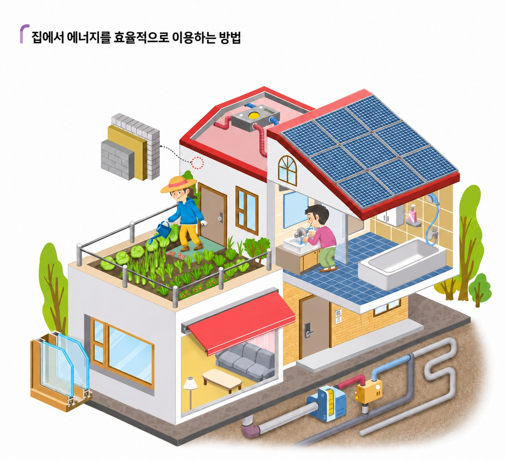
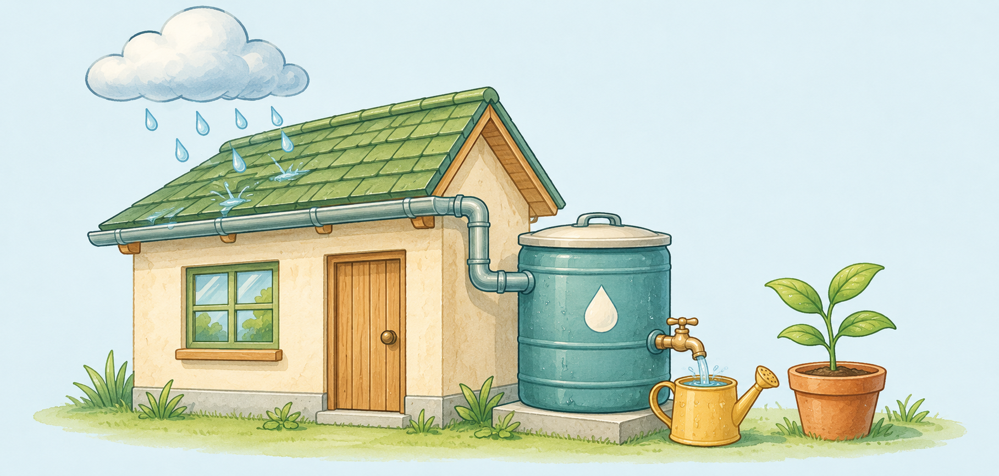
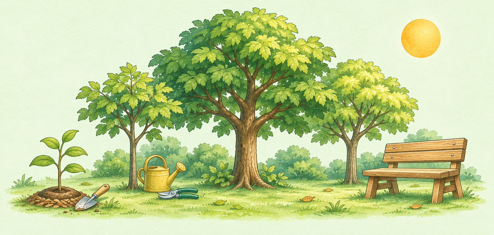
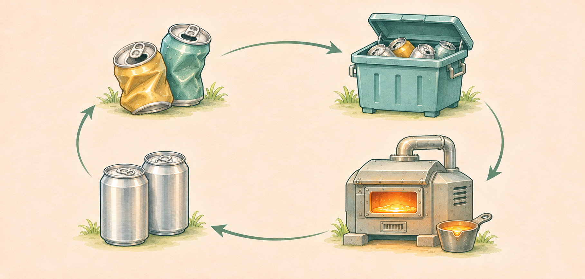
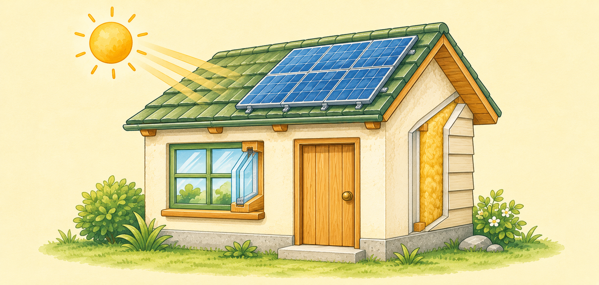
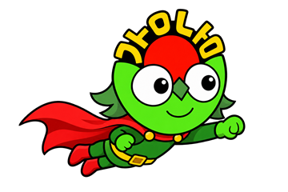

5학년 과학 · 4단원 자원과 에너지
교과서 94~95쪽 · 실험관찰 60~61쪽 연계
함께 쓰는 지구


물을 적게 쓰는 것과 다시 쓰는 것은 어떻게 다를까요?

새 나무를 심었다면, 숲을 돌보는 일은 끝난 걸까요?

빈 캔을 일반 쓰레기와 섞어 버리면 어떤 기회를 잃게 될까요?

같은 밝기로 교실을 비출 때, 전기를 덜 쓰는 방법은 무엇일까요?
